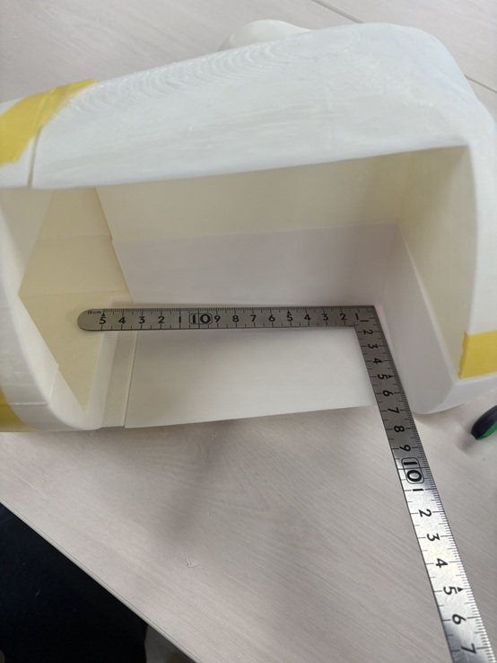

アイデアスケッチ/image
概要
私たちは15人の班で「世界一のアヒル」を作ることをテーマに活動することになった。
あやちゃんが一年のデザイン経営論で考えたアヒルの案が面白いということで、私もこのプロジェクトに加わった。
本体、車、光・音、背景の４つのグループに分かれて作業を行う。私は本体グループで、同時に動画撮影もするグループに入っている。
計画

⬆️本体グループの計画と、全体グループの計画表
動画は、「本体＆背景」「車＆光・音」の2班に分かれて動画撮影・編集を行う。
プロセスメモ
■は考えないといけないこと、疑問等●は具体的にやること、→はやったこと
■本体の素材をＭＤＦか３Dプリンターどちらにするのか
●中にスピーカーを入れたり、色を着色する為に3Dプリンタ―を用いる。
→３Dプリンターで製作することが決定！ミニサイズのアヒルを３Dプリンターで製作した。5/26⬇️
■アヒルがひっくり返らないように重さを考える
●頭部の密度を軽くして、体の密度を上げて調節する
→curaで作成する前に、インフィル密度を10％に変える
■アヒルの下に取り付ける車のサイズを相談して、本体に空けるスペースの正確な大きさ考える
●正確な大きさを元にデータ作成を行う
→横12㎝、奥行14㎝、縦幅12.5以上（最低８㎝）確保する
■アヒル本体をとりあえず形にするためにデータ作る
●本体大きすぎるから分割してデータ作成しなければならない
→５分割にして印刷中！！１つのパーツだけで１日と５時間かかることも…。 ⬇️頭の印刷完了6/10
■スピーカーを入れる穴を上に付ける予定だったが、そうすると車チームの為に空ける空間がなくなってしまう
●スピーカーも下に入れる形で本体を作る
→試作完成！！6/11⬇️

■翼を差し込む為の穴を開けたアヒルを考えなければならない＆上⬆️のアヒルの大きさだと中の穴が小さくて車チームの要望通りでない。
●データ作成
→出力中
■アヒルにどんな装飾をして、「かわいく」「かっこよく」するのか考える
●羽をこだわる、サングラスをつける、３Dプリンターで出来た本体を染色する
→翼をアクリルで製作中、本体に塗るアクリル絵の具や装飾のリボンなどの買い出し完了💗🎀